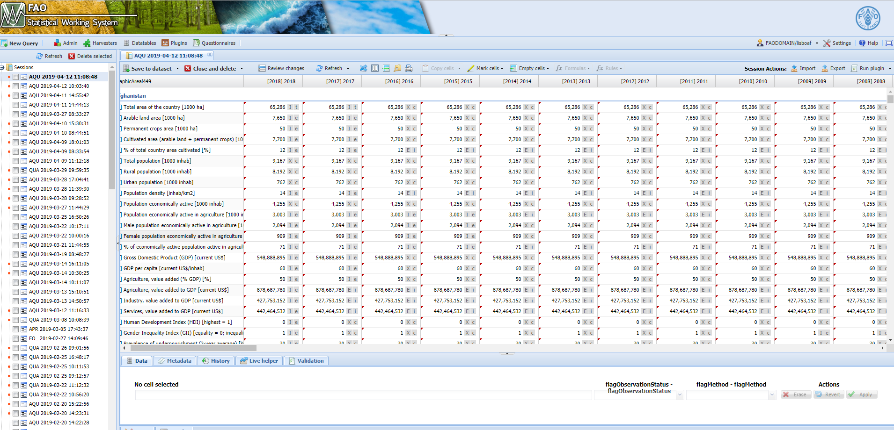
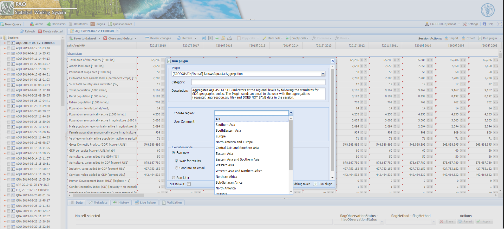

Chapter 6 The faoswsAquastatAggregation module
The faoswsAquastatAggregation produces the regional aggregations of the SDG 6.4.1 (Water Use Efficiency) and 6.4.2 (Water Stress) following the guidelines for SDG regional aggregates. The input for this module is the dataset from the faoswsAquastatUpdate module.
Figure 6.1: Workflow of the faoswsAquastatAggregation module
6.1 Steps
Below you find the description of the process to calculate aggregates.
6.1.1 Calculate region-specific aggregations for SDG 6.4.2
The aggregation of the SDG 6.4.1 (Water Stress) is region-specific, which means that for each region there is a specific equation. The equations differ from each other in terms of an element(s) that need to add or discount from the aggregates final regional aggregates. These elements, in turn, are country-specific. Therefore, the equations have a fixed part that aggregates elements at the regional level a variable part representing element values at the country level.
To account for the information necessary to aggregate the SDGs, the SWS has a data table named aqua_sdg_agg, which contains the fixed and variable part of the aggregating equations. In the table below, aqua_sdg_agg, the columns are:
regional_el_code. This column tells the faoswsAquastatAggregation module which elements MUST be aggregated at the regional level fixed part of the equation.
relevant_el_code. This column has the elements whose values should be added/discount to the fixed part of the equation;
countr_el_code. This column indicates the countries in each regional aggregate the elements in the column relevant_el_code should be taken from;
addition. The formulas with the country-specific elements that should be added/discounted to the final region-specific aggregate.
sdg_region. The codes of the regions the SDG should be aggregated for;
group_order_name. The name of the regions the SDG should be aggregated for;
column_to_select. The columns in the SWS data table a2017regionalgroupings_SDG_02Feb2017 from each the codes in the sdg_region code were taken from. This data table comes from the Loss and Waste SWS domain, and its use in the faoswsAquastatAggregation module was kindly granted by Ms Alicia English (Food Waste and Loss consultant in the ESS - SWS team).
transboundary. A binary column with 1 (equations accounting for country-specific elements, i.e., using the column addition) and 0 ( equation where country-specific elements do not need to be considered for);
indicator. A column with the aquastatElement code for the SDG 6.4.1 (4551) and SDG 6.4.2 (4550).
| region_el_code | relevant_el_code | country_el_code | addition | sdg_region | group_order_name | column_to_select | transboundary | indicator |
|---|---|---|---|---|---|---|---|---|
| 4263, 4157, 4549 | 4160 | 484 | X4160 + X4162 - X4174 | 419 | LAC | sdgregion_code | 1 | 4550 |
| 4263, 4157, 4549 | 4162 | 484 | X4160 + X4162 - X4174 | 419 | LAC | sdgregion_code | 1 | 4550 |
| 4263, 4157, 4549 | 4174 | 484 | X4160 + X4162 - X4174 | 419 | LAC | sdgregion_code | 1 | 4550 |
| 4263, 4157, 4549 | 4160 | 356 | X4160 | 34 | Southern Asia | m49_level2_code | 1 | 4550 |
| 4263, 4157, 4549 | 4160 | 458 | X4160 | 35 | SouthEastern Asia | m49_level2_code | 1 | 4550 |
| 4263, 4157, 4549 | 4168 | 643 | X4168 + X4160 | 150 | Europe | m49_level1_code | 1 | 4550 |
In the following table, find the description of relevant AQUASTAT elements present in the aqua_sdg_agg.
| element_code | element_name |
|---|---|
| 4103 | Cultivated area (arable land + permanent crops) |
| 4157 | Total internal renewable water resources (IRWR) |
| 4160 | Surface water: inflow not submitted to treaties |
| 4162 | Surface water: inflow secured through treaties |
| 4168 | Surface water: accounted flow of border rivers |
| 4174 | Surface water: outflow to other countries secured through treaties |
| 4188 | Total renewable water resources |
| 4250 | Agricultural water withdrawal |
| 4251 | Municipal water withdrawal |
| 4252 | Industrial water withdrawal |
| 4253 | Total water withdrawal |
| 4254 | Agricultural water withdrawal as % of total water withdrawal |
| 4255 | Municipal water withdrawal as % of total withdrawal |
| 4256 | Industrial water withdrawal as % of total water withdrawal |
| 4263 | Total freshwater withdrawal (primary and secondary) |
| 4379 | Total harvested irrigated crop area (full control irrigation) |
| 4546 | Industry, value added to GDP |
| 4547 | Services, value added to GDP |
| 4548 | Agriculture, value added to GDP |
| 4549 | Environmental Flow Requirements |
| 4557 | Ratio between rainfed and irrigated yields |
| 4558 | GDP deflator (2015) |
6.1.2 Calculate region-specific aggregations for SDG 6.4.1
Different from the SDG 6.4.2, the regional aggregations of the SDG 6.4.2 do not have a national component that varies from region to region. Therefore, the aggregates are done by summarizing the elements composing the SDG 6.4.1 intermediates and then obtain the SDG 6.4.1 aggregation at the regional level. The formulas for the SDG 6.4.1 and its intermediates are in the column addition of the SWS aqua_sdg_agg datatable.
6.1.3 Send the result to the user email
The output of the faoswsAquastatAggregation module is a large pivot dataset that is sent by email to the user (FAO corporate email). The output looks like the table below.
| geographicAreaM49_description | geographicAreaM49 | aquastatElement | aquastatElement_description | timePointYears | Value | unit |
|---|---|---|---|---|---|---|
| Western Asia | 145 | 4550 | SDG 6.4.2. Water Stress | 1992 | 0.4557873 | % |
| Western Asia | 145 | 4550 | SDG 6.4.2. Water Stress | 1993 | 0.5971864 | % |
| Western Asia | 145 | 4550 | SDG 6.4.2. Water Stress | 1994 | 0.6109164 | % |
| Western Asia | 145 | 4550 | SDG 6.4.2. Water Stress | 1995 | 0.6377857 | % |
| Western Asia | 145 | 4550 | SDG 6.4.2. Water Stress | 1996 | 0.6539950 | % |
| Western Asia | 145 | 4550 | SDG 6.4.2. Water Stress | 1997 | 0.6683262 | % |
| Western Asia | 145 | 4550 | SDG 6.4.2. Water Stress | 1998 | 0.6772031 | % |
| Western Asia | 145 | 4550 | SDG 6.4.2. Water Stress | 1999 | 0.6924796 | % |
| Western Asia | 145 | 4550 | SDG 6.4.2. Water Stress | 2000 | 0.7102366 | % |
| Western Asia | 145 | 4550 | SDG 6.4.2. Water Stress | 2001 | 0.7114118 | % |
| Western Asia | 145 | 4551 | SDG 6.4.1. Water Use Efficiency | 2006 | 0.8629216 | USD/m3 |
| Western Asia | 145 | 4551 | SDG 6.4.1. Water Use Efficiency | 2007 | 0.9281061 | USD/m3 |
| Western Asia | 145 | 4551 | SDG 6.4.1. Water Use Efficiency | 2008 | 0.9136426 | USD/m3 |
| Western Asia | 145 | 4551 | SDG 6.4.1. Water Use Efficiency | 2009 | 0.9379750 | USD/m3 |
| Western Asia | 145 | 4551 | SDG 6.4.1. Water Use Efficiency | 2010 | 1.0588836 | USD/m3 |
| Western Asia | 145 | 4551 | SDG 6.4.1. Water Use Efficiency | 2011 | 1.0666686 | USD/m3 |
| Western Asia | 145 | 4551 | SDG 6.4.1. Water Use Efficiency | 2012 | 1.1361312 | USD/m3 |
| Western Asia | 145 | 4551 | SDG 6.4.1. Water Use Efficiency | 2013 | 1.1913405 | USD/m3 |
| Western Asia | 145 | 4551 | SDG 6.4.1. Water Use Efficiency | 2014 | 1.2245824 | USD/m3 |
| Western Asia | 145 | 4551 | SDG 6.4.1. Water Use Efficiency | 2015 | 1.3013408 | USD/m3 |
| Western Asia | 145 | 4551 | SDG 6.4.1. Water Use Efficiency | 2016 | 1.3593825 | USD/m3 |
| Western Asia | 145 | 4551 | SDG 6.4.1. Water Use Efficiency | 2017 | 1.3593825 | USD/m3 |
| Western Asia | 145 | 4551 | SDG 6.4.1. Water Use Efficiency | 2018 | 1.3593825 | USD/m3 |
6.2 Running the module
After running the faoswsAquastatUpdate module, wait for the result to pop up in the session;
Figure 6.2: aquastat_update populated session from the faoswsAquastatUpdate module.
Once the session is populated with the aquastat_update dataset, click on Run plugin;
Select faoswsAquastatAggregation module and Choose the region to get the SDG aggregates from;
Figure 6.3: Choose the Aggregation module and the region.
Click on Run plugin and wait for the end of the processing;
Check your FAO corporate email;
Figure 6.4: Steps 1 to 4
The faoswsAquastatAggregation does not save any result on the session. Aggregates are meant to be performed on the fly at the user convenience using as input the aquastat_update dataset.